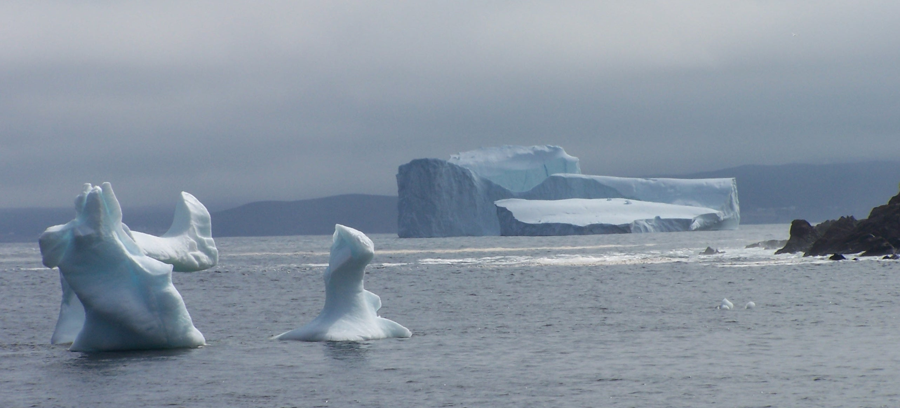

Home
Welcome to the webpage of Graig Sutherland. I am a physical oceanographer interested in the physics of the upper ocean. Below you will find
Welcome to the webpage of Graig Sutherland. I am a physical oceanographer interested in the physics of the upper ocean. Below you will find